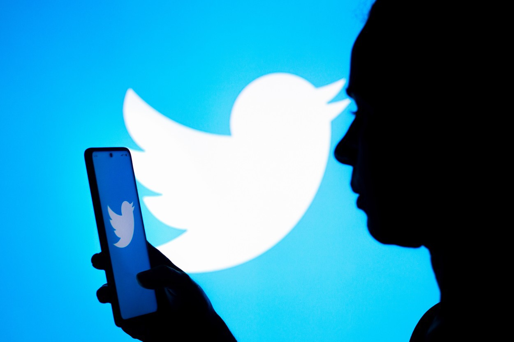
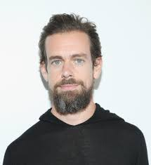
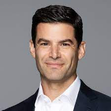

Istoria Twitter
Twitter a fost lansat în 2006 de Jack Dorsey, Biz Stone și Evan Williams sub numele de "twittr". Conceptul a fost de a permite utilizatorilor să împărtășească mesaje scurte (numite "tweets") de până la 140 de caractere. În timp, Twitter a crescut în popularitate și a evoluat într-un instrument important pentru jurnalismul și activismul online.
Astăzi, Twitter are peste 330 de milioane de utilizatori activi lunar și este folosit pentru a împărtăși informații și opinii despre subiecte diverse, de la politica și afaceri la divertisment și sport.

Servicii Twitter
- Tweet - mesaj scurt de până la 280 de caractere
- Retweet - partajarea unui tweet de la alt utilizator
- Hashtag - eticheta utilizată pentru a grupa tweet-urile despre același subiect
- Follow - urmărirea unui utilizator pentru a vedea tweet-urile sale în feed-ul de pe pagina de start
- Trending - subiectele populare pe Twitter într-un moment dat
Conducerea Twitter
- Jack Dorsey - CEO și cofondator 
- Ned Segal - CFO 
- Kayvon Beykpour - șef de produs
- Leslie Berland - CMO